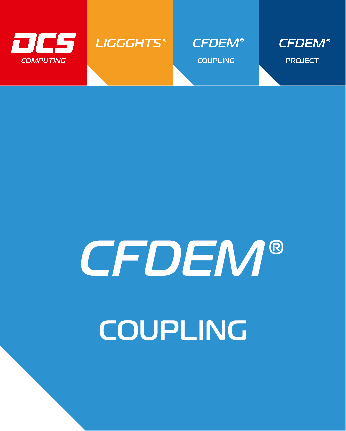

CFDEM®coupling Documentation¶

Contents¶
The CFDEM®coupling documentation is organized into the following sections. If you find any errors or omissions in this manual or have suggestions for useful information to add, please send an email to the developers so the CFDEM®coupling documentation can be improved.
About CFDEM®coupling¶
CFDEM®coupling provides an open source parallel coupled CFD-DEM framework combining the strengths of LIGGGHTS® DEM code and the Open Source CFD package OpenFOAM®(*). The CFDEM®coupling toolbox allows to expand standard CFD solvers of OpenFOAM®(*) to include a coupling to the DEM code LIGGGHTS®. In this toolbox the particle representation within the CFD solver is organized by “cloud” classes. Key functionalities are organised in sub-models (e.g. force models, data exchange models, etc.) which can easily be selected and combined by dictionary settings.
The coupled solvers run fully parallel on distributed-memory clusters. Features are:
- its modular approach allows users to easily implement new models
- its MPI parallelization enables to use it for large scale problems
- the forum on CFD-DEM gives the possibility to exchange with other users / developers
- the use of GIT allows to easily update to the latest version
- basic documentation is provided
The file structure:
- src directory contains the source-code files of the CFDEM®coupling toolbox library and models
- applications directory contains the solver source files for coupled CFD-DEM simulations
- doc directory including the documentation of CFDEM®coupling
- tutorials directory including basic tutorial cases showing the functionality
The functionality of this CFD-DEM framework is described via tutorial cases showing how to use different solvers and models.
CFDEM®coupling stands for Computational Fluid Dynamics (CFD) -Discrete Element Method (DEM) coupling.
CFDEM®coupling is an open-source code, distributed freely under the terms of the GNU Public License (GPL).
Core development of CFDEM®coupling is done by Christoph Goniva and Christoph Kloss, both at DCS Computing GmbH, 2012
This documentation was written by DCS Computing GmbH, 2017
How CFDEM®coupling works, a short description:
The launched applications are CFDEM®coupling solvers, e.g. cfdemSolverPiso. Its job is to solve the Navier-Stokes equations with a solid phase present. A general formulation with a solid phase:
In general “l” denotes liquid and “s” solid properties. AlphaL is the fluid (liquid) content of a calculation-cell, the voidfraction. “rhoL” is the fluid (liquid) density, uL the fluid (liquid) velocity, p the pressure, Ksl the implicit momentum exchange term between solid and liquid phase, us the solid velocity, tau the liquid-stress-tensor, g the gravity vector and t the time. “f” is a general explicit term which can be used to explicitely exchange momentum from the solid to the liquid phase.
All cfdemSolvers use a “cfdemCloud” object, which takes care of many things. The most important are:
- Control and communicate with the LIGGGHTS® library object. (liggghtsCommandModel and dataExchangeModel)
- Find the cell ID of a certain position, e.g. the particle center. (locateModel)
- Calculate the voidfraction field from particle positions, particle volumes and cell volumes. (voidFractionModel)
- Calculate the forces on the CFD field and the particle forces. These may be assembled by various forceModels, e.g. buyoancy and a drag-law. (forceModel and forceSubModel)
- Calculate the implicit and if necessary explicit source terms from the force fields for the Navier-Stokes-Equations, the solver needs to solve. (momCoupleModel)
- Calculate the “Us” field from particle data, map the particle data to the CFD field. (averagingModel)
In the standard setting the momentum coupling model takes the calculated forces of forceModels and produces the implicit momentum source term Ksl with

More advanced solvers have also an explicit source term field f which is assembled from those forces which have the treatForceExplicit=true flag (see forceSubModels).
(*) This offering is not approved or endorsed by OpenCFD Limited, the producer of the OpenFOAM software and owner of the OPENFOAM® and OpenCFD® trade marks.
Installation¶
This section describes how to download repositories of the CFDEM®project from github.com . After setting some environment variables, LIGGGHTS® and CFDEM®coupling can be compiled.
Procedure:
Short summary:
- Install git
- Download CFDEM®project software
- Download the correct OpenFOAM® version
- Setup prerequisites
- Setup and compile OpenFOAM®
- Set environment variables and paths
- Compile LIGGGHTS® and CFDEM®coupling
- Additional information
- Run your own cases
Install git:
This step is optional, but recommended. Git allows you to update the source code very easily with the git pull command. On debian based systems you can run
sudo apt-get install git-core
Similar packages are available on other systems too:
sudo zypper install git-core
sudo yum install git
Note
In this tutorial the git protocol is used to transfer files. If port 9418 is closed for internet connections, please switch to “https://” instead of “git://” for git clone commands.
Download CFDEMproject software:
With git you can clone git repositories from github . The following terminal commands will download the CFDEM®project software to your machine in the typical folder structure. The download of the post-processing tool LPP is optional and requires python-numpy.
cd $HOME
mkdir CFDEM
cd CFDEM
git clone git://github.com/CFDEMproject/CFDEMcoupling-PUBLIC.git
cd $HOME
mkdir LIGGGHTS
cd LIGGGHTS
git clone git://github.com/CFDEMproject/LIGGGHTS-PUBLIC.git
git clone git://github.com/CFDEMproject/LPP.git lpp
If you do not have git, you can use the download buttons after visiting a repository in the CFDEMproject project page and unzip the archives to the proper locations. Typically github tags the folders with “-master”, please rename them with
cd $HOME/CFDEM
mv CFDEMcoupling-PUBLIC-master CFDEMcoupling-PUBLIC
cd $HOME/LIGGGHTS
mv LIGGGHTS-PUBLIC-master LIGGGHTS-PUBLIC
mv LPP-master lpp
Download the correct OpenFOAM® version:
All mentions of OpenFOAM® refer to this . It is strongly recommended to compile OpenFOAM® yourself with the latest compatible version. The latest compatible OpenFOAM®-version can be found in the in your local copy of CFDEM®coupling in src/lagrangian/cfdemParticle/cfdTools/versionInfo.H, or directly at github . Look for the git commit hashtag in the following line:
word OFversion="<OF-Release>-commit-<commitHashtag>";
e.g. word OFversion="5.x-commit-538044ac05c4672b37c7df607dca1116fa88df88";
With git you can use the following recipe to get the correct version:
cd $HOME
mkdir OpenFOAM
cd OpenFOAM
git clone git://github.com/OpenFOAM/OpenFOAM-<OF-Release>.git
git clone git://github.com/OpenFOAM/ThirdParty-<OF-Release>.git
cd OpenFOAM-<OF-Release>
git checkout <commitHashtag>
Without git you can visit git://github.com/OpenFOAM/OpenFOAM-<OF-Release>/tree/<commitHashtag> and use the download button.
Other OpenFOAM® versions can be used for compilation, but aren’t officially supported. The list includes 4.x, 3.x, 2.4.x, 1612+, 1606+ and extend-3.2
Setup prerequisites for CFDEM®project:
Prerequisites for OpenFOAM® can be found here . On an Ubuntu system (14.04+), you can use the following
sudo apt-get install build-essential flex bison cmake zlib1g-dev libboost-system-dev libboost-thread-dev libopenmpi-dev openmpi-bin gnuplot libreadline-dev libncurses-dev libxt-dev libscotch-dev libptscotch-dev
CFDEM®project requires OpenFOAM® with a working MPI version. Optional, but strongly recommended is the use of VTK . VTK is used to directly write data in vtk format, which is readable by ParaView . The minimum version is VTK 5.8, recommended is 6.3. On debian-based systems it is sufficient to run
sudo apt-get install libvtk6-dev
For manual VTK compilation, please read the additional installation hints .
The post-processing tool lpp requires the python numpy package.
sudo apt-get install python-numpy
Setup and compile OpenFOAM®
You can follow the OpenFOAM® git compilation instructions , with a small number of exceptions: CFDEM®coupling requires the WM_LABEL_SIZE=32 , which is the standard setting.
On an Ubuntu system (14.04+), you can use the following steps to install OpenFOAM®:
gedit ~/.bashrc
add the following two lines in the end, where <NofProcs> is the integer number of the processors you want to compile with. Save and exit gedit.
"export WM_NCOMPPROCS=<NofProcs>"
"source $HOME/OpenFOAM/OpenFOAM-<OF-Release>/etc/bashrc"
now again in the terminal:
source ~/.bashrc
cd $WM_PROJECT_DIR
foamSystemCheck
./Allwmake
Additional OpenFOAM® installation hints can be found here .
Set environment variables and paths
Typically the CFDEM®coupling folder is tagged with the OpenFOAM® version number. To do this, perform the following steps:
cd $HOME/CFDEM
mv CFDEMcoupling-PUBLIC CFDEMcoupling-PUBLIC-$WM_PROJECT_VERSION
You need to set some environment variables in ~/.bashrc (if you use c-shell, manipulate ~/.cshrc accordingly). Open your .bashrc and the CFDEM®coupling bashrc file.
gedit ~/.bashrc $HOME/CFDEM/CFDEMcoupling-PUBLIC-$WM_PROJECT_VERSION/src/lagrangian/cfdemParticle/etc/bashrc
Add the STANDARD block to the end of your bashrc and modify entries if necessary. Make sure the statements are not comments; remove the “#”. Similar to:
#================================================#
#- source cfdem env vars
export CFDEM_VERSION=PUBLIC
export CFDEM_PROJECT_DIR=$HOME/CFDEM/CFDEMcoupling-$CFDEM_VERSION-$WM_PROJECT_VERSION
export CFDEM_PROJECT_USER_DIR=$HOME/CFDEM/$LOGNAME-$CFDEM_VERSION-$WM_PROJECT_VERSION
export CFDEM_bashrc=$CFDEM_PROJECT_DIR/src/lagrangian/cfdemParticle/etc/bashrc
export CFDEM_LIGGGHTS_SRC_DIR=$HOME/LIGGGHTS/LIGGGHTS-PUBLIC/src
export CFDEM_LIGGGHTS_MAKEFILE_NAME=auto
export CFDEM_LPP_DIR=$HOME/LIGGGHTS/lpp/src
. $CFDEM_bashrc
#================================================#
You may insert the EXTENDED block above ”. $CFDEM_bashrc” for further customization. The detailed description for allowed entries can be found here .
To load and check the environment you can run now
source ~/.bashrc
cfdemSysTest
Note
Many useful aliases are set with sourcing of the CFDEMcoupling bashrc, e.g. cfdemEtc . Make use of them!
Compile LIGGGHTS® and CFDEM®coupling
To compile CFDEM®project open a new terminal and run
cfdemCompCFDEMall
It compiles the LIGGGHTS® executable, LIGGGHTS® as a shared library, the CFDEM®coupling libraries, CFDEM®coupling solvers and CFDEM®coupling utilities. The compilation will stop, if build errors occur. Having a previous manually compiled LIGGGHTS® is not enough, it needs to be compiled as shared library with the cfdemCompLIG command.
As step by step compilation of only specific parts, the following commands are available:
cfdemCompLIG
cfdemCompCFDEMsrc
cfdemCompCFDEmsol
cfdenCompCFDEMuti
The compilation is automatically logged and the logs can be found in:
$CFDEM_SRC_DIR/lagrangian/cfdemParticle/etc/log
In case questions concerning the installation arise, please feel free to contact our forum at www.cfdem.com .
Run your own cases
If you want to run your own cases, please do so in $CFDEM_PROJECT_USER_DIR/run which is automatically being generated. E.g. copy one of the tutorial cases there, adapt it to your needs. Changes in $CFDEM_TUT_DIR might be lost after every git stash.
You can run all the tutorial cases by executing the alias cfdemTestTUT. Alternatively you can run each tutorial using the Allrun.sh scripts in the tutorial directories.
To run pure LIGGGHTS® cases, you can use the aliases
cfdemLiggghts inputScriptName
cfdemLiggghtsPar inputScriptName nOfProcs
or you can set a link in /usr/local/bin to the LIGGGHTS® executable as described in the LIGGGHTS®documentation .
Backwards Compatibility:
Basically CFDEM®coupling supports one OpenFOAM® version therefore all settings are prepared for that. Nevertheless we try to maintain backwards compatibility as long as it works with reasonable effort.
The supported OpenFOAM® and LIGGGHTS® versions are stated in: src/lagrangian/cfdemParticle/cfdTools/versionInfo.H
For using other versions you can manipulate: src/lagrangian/cfdemParticle/etc/OFversion/OFversion.H (still not all functionality might work then!)
Installation, additional information
Procedure:
- Setup prerequisites
- Setup and compile OpenFOAM®
- Set environment variables and paths
- Compile LIGGGHTS® and CFDEM®coupling
- Compiling OpenFOAM®, LIGGGHTS® and CFDEM®coupling in debug mode
Setup prerequisites for CFDEM®project:
If you need to compile VTK on your machine yourself, we recommend version 6.3, which is available here . The installation guide is available here .
Please note the VTK components necessary need cmake, MPI and some X11 libraries on your machine. Compilation using ccmake is recommended. In the standard configuration MPI related packages are disabled. Enable Parallel / MPI packages during configuration. For VTK-6.3 set VTK_Group_MPI:BOOL=ON .
Setup and compile OpenFOAM®
All mentions of OpenFOAM® refer to this .
Often problems arise configuring OpenFOAM® to work with a specific MPI installation on a cluster. However it has built-in capability to work with nearly any MPI implementation. Set the following variable in the OpenFOAM® bashrc:
export WM_MPLIB=SYSTEMMPI
Defining the following variables in your ~/.bashrc BEFORE the sourcing of OpenFOAM® will take care of the rest. This is an example for older MVAPICH installations where there is no libmpi.so, only libmpich.so :
export MPI_ROOT=<path/to/mpi/installation>
export MPI_ARCH_PATH=$MPI_ROOT
export MPI_ARCH_FLAGS="-DMPICH_SKIP_MPICXX"
export MPI_ARCH_INC="-I$MPI_ARCH_PATH/include"
export MPI_ARCH_LIBS='-L$(MPI_ARCH_PATH)/lib -lmpich -lmpichcxx -lmpl -lopa -lrt'
Set environment variables and paths
Detailed description of the environment variables:
standard block:
| CFDEM_VERSION | CFDEMcoupling branch name; e.g. PUBLIC | |
| CFDEM_PROJECT_DIR | path to the installation directory of CFDEM®coupling | |
| CFDEM_PROJECT_USER_DIR | path to the user directory; used to store users simulation cases and source-code | |
| CFDEM_bashrc | location of the CFDEM®coupling bashrc (or cshrc) | which sets up the environment |
| CFDEM_LIGGGHTS_SRC_DIR | path to the LIGGGHTS src directory | |
| CFDEM_LIGGGHTS_MAKEFILE_NAME | Name of the LIGGGHTS® Makefile which defines how to compile LIGGGHTS®; more information on which Makefile to select is within the LIGGGHTS® documentation; standard is auto | |
| CFDEM_LPP_DIR path | to the src directory of the local lpp installation |
extended block may be inserted above ”. $CFDEM_bashrc”:
| CFDEM_SRC_DIR | can be used to use alternative src directory | |
| CFDEM_SOLVER_DIR | can be used to use alternative solver directory | |
| CFDEM_DOC_DIR | can be used to use alternative doc directory | |
| CFDEM_UT_DIR | can be used to use alternative utilities directory | |
| CFDEM_TUT_DIR | can be used to use alternative tutorials directory | |
| CFDEM_LIGGGHTS_MAKEFILE_POSTIFX | if you wish to compile LIGGGHTS® to CFDEM®coupling with a postfix auto Makefile; for more information on postfixes please read the LIGGGHTS® documentation | |
| CFDEM_VERBOSE | if set to false | standard output of environment variables is suppressed |
additionalLibs:
The additionalLibs are used as a centralized system for adding libraries and paths to CFDEM®coupling compilations. There is and automated detection of your OpenFOAM® version, which should select the proper additionalLibs file. If the automated selection of the additionalLibs fails or if you wish to set it manually to a specific file, you may set the following environment variables above ”. $CFDEM_bashrc”:
| CFDEM_ADD_LIBS_DIR | path containing the user-defined additionalLibs file |
| CFDEM_ADD_LIBS_NAME | filename of the user-defined additionalLibs file |
even further customization with variables:
| CFDEM_LAMMPS_LIB_DIR | alternative path to LIGGGHTS® lib folder containing additional LIGGGHTS® packages; e.g. ASPHERE |
| CFDEM_LIGGGHTS_LIB_PATH | path to compiled LIGGGHTS® library; useful if the compiled LIGGGHTS® library has manually been moved from the LIGGGHTS® src path to an alternative location |
| CFDEM_LIB_DIR | alternative target directory for CFDEM®coupling libraries |
| CFDEM_USER_LIB_DIR | alternative target directory for CFDEM®coupling user-libraries |
| CFDEM_APP_DIR | alternative target directory for CFDEMcoupling executables |
| CFDEM_USER_APP_DIR | alternative target directory for CFDEM®coupling user-executables |
Compile LIGGGHTS® and CFDEM®coupling
LIGGGHTS® needs to be compiled as library with the cfdemCompLIG command. You can compile LIGGGHTS® manually as a shared library with “make -f Makefile.shlib <Makefilename>” within your LIGGGHTS® src directory. LIGGGHTS® is included into CFDEM®coupling by the creation of a symbolic link in $CFDEM_LIB_DIR to the LIGGGHTS shared library. This link is automatically created during the compilation of the CFDEM®coupling lagrangian library at the beginning of the make phase. This means even if you compile the lagrangian library manually with “wmake libso”, the link is created.
Compiling OpenFOAM®, LIGGGHTS® and CFDEM®coupling in debug mode
Set the WM_COMPILE_OPTION parameter in the OF bashrc to “Debug” and compile OF with the Allwmake script. If you are using the LIGGGHTS® auto Makefile, simply compile LIGGGHTS® and CFDEM®coupling with “cfdemCompCFDEMall”. CFDEM®coupling detects the OpenFOAM® variable compiles LIGGGHTS® in debug mode. The coupling itself is compiled with OpenFOAM®s wmake, so this is automatically taken care of. If you aren’t using the auto Makefile, you need to make sure the “-O0 -g” or “-O2 -g” compilation parameters are set properly within the LIGGGHTS®-Makefile.
Footnotes:
OPENFOAM® is a registered trade mark of OpenCFD Limited, producer and distributor of the OpenFOAM software via wwww.openfoam.com.
Tutorials¶
General:
Each solver of the CFDEM®coupling comes with at least one tutorial example, showing its functionality and correct usage. Provided that the installation is correct, the tutorials can be run via “Allrun.sh” shell scripts. These scripts perform all necessary steps (preprocessing, run, postprocessing, visualization).
Location:
The tutorials can be found in the directory $CFDEM_PROJECT_DIR/tutorials, which can be reached by typing “cfdemTut”
Structure:
Each case is structured in a directory called “CFD” covering the CFD relevant settings and data, and a dirctory called “DEM” covering the DEM relevant settings and data. This allows to easily expand a pure CFD or DEM simulation case to a coupled case.
Usage:
Provided that the installation is correct, the tutorials can be run via “Allrun.sh” shell script, executed by typing ”./Allrun.sh”. The successful run of the script might need some third party software (e.g. octave, evince, etc.).
A typical Allrun.sh script executes the following steps:
- DEM: LIGGGHTS init run
- CFD: mesh generation (blockMesh)
- CFD: mesh decomposition (decomposePar)
- CFDEM: parallel CFDEM run; mpirun -np X cfdemSolverXXX -parallel
- post-processing
Settings:
The main settings of a simulation are done via dictionaries:
The DEM setup of each case is defined by a LIGGGHTS® input file located in $caseDir/DEM (e.g. in.liggghts_init). For details on the LIGGGHTS® setup, please have a look at the LIGGGHTS® manual.
Standard CFD settings are defined in $caseDir/CFD/constant (e.g. transportProperties, RASproperties, etc.) and $caseDir/CFD/system (e.g. fvSchemes, controlDict). For settings related to the solver such as discretization schemes, solution settings for the equations and solver control (e.g. corrector or non-orthogonal corrector steps for non-orthogonal meshes) you can find more information in OpenFOAM®(*) documentations (www.openFoam.com)(*).
Settings of the coupling routines are defined in $caseDir/CFD/constant/couplingProperies (e.g. force models, data exchange model, etc.) and $caseDir/CFD/constant/liggghtsCommands (allows to execute a LIGGGHTS® command during a coupled simulation).
“couplingProperties” dictionary¶
General:
In the “couplingProperties” dictionary the setup of the coupling routines of the CFD-DEM simulation are defined.
Location: $caseDir/CFD/constant
Structure:
The dictionary is divided into two parts, “sub-models & settings” and “sub-model properties”.
In “sub-models & settings” the following routines must be specified:
- solveFlow
- modelType
- couplingInterval
- voidFractionModel
- locateModel
- meshMotionModel
- IOModel
- probeModel
- dataExchangeModel
- averagingModel
- clockModel
- smoothingModel
- forceModels
- momCoupleModels
- turbulenceModelType
In “sub-model properties” sub-dictionaries might be defined to specify model specific parameters.
Settings:
Reasonable example settings for the “couplingProperties” dictionary are given in the tutorial cases.
solveFlow
The solveFlow switch determines, whether the fluid equations are solved or not. By setting solveFlow to false, the fluid solver becomes inactive.
modelType
“modelType” refers to the formulation of the equations to be solved. Choose “A”, “B” or “Bfull”, according to Zhou et al. (2010): “Discrete particle simulation of particle-fluid flow: model formulations and their applicability”, JFM. “A” requires the use of the force models gradPForce and viscForce, whereas “B” requires the force model “Archimedes”. “Bfull” refers to model type I, “A” refers to model type II and “B” refers to type III in the nomenclature used by Zhou et al.
couplingInterval
The coupling interval determines the time passing between two CFD-DEM data exchanges.
A useful procedure would be:
- Set the DEM timestep in the in.xxx file according to the needs of the pure DEM problem.
- Set the “couplingInterval”, which refers to the DEM timesteps. Depending on the problem you will need to have a close (small couplingInterval) or loose coupling.
- Choose the CFD timestep in the controlDict. It must be equal to or smaller than the coupling time, otherwise you will get the error: “Error - TS bigger than coupling interval!”.
- To ensure a synchronous run, the coupling time should be a multiple of the CFD timestep, or you’ll get a warning “Warning - Coupling time (= DEM time step * coupling interval) is not a multiple of CFD time-step!”
Example: DEMts=1.0e-5s, couplingInterval=10 exchange data (=couple) will happen every 1.0e-4s.
“liggghtsCommands” dictionary¶
General:
In the “liggghtsCommands” dictionary LIGGGHTS® commands being executed during a coupled CFD-DEM simulation are specified. The most important command is the “run” command. After the start-up read of the LIGGGHTS®-input-script it is fed by CFDEM®coupling with commands. User-defined commands may be added.
Location: $caseDir/CFD/constant
Structure:
The dictionary is divided into two parts, first a list of “liggghtsCommandModels” is defined, then the settings for each model must be specified.
Settings:
Reasonable example settings for the “liggghtsCommands” dictionary are given in the tutorial cases.
Models/Solvers¶
This section lists all CFDEMcoupling sub-models and solvers alphabetically, with a separate listing below of styles within certain commands.